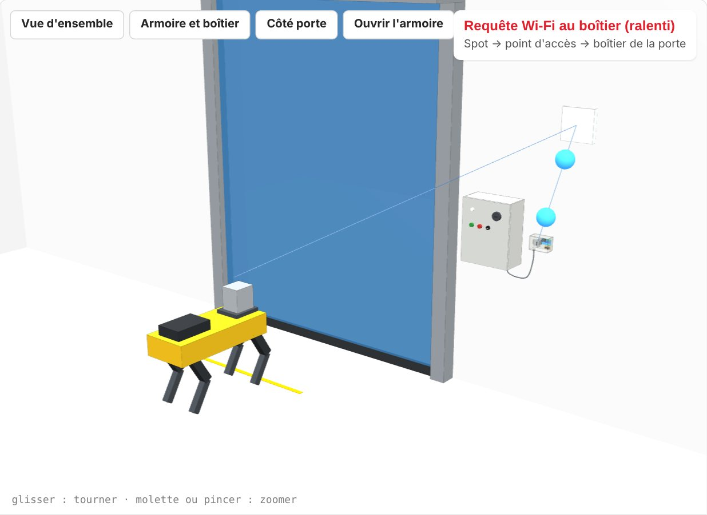

L'interface interactive
Voir un passage complet, puis le câblage et le boîtier en 3D
La porte s'ouvre, Spot attend, vérifie et passe. On peut changer les temps, provoquer une panne, ouvrir l'armoire, démonter le boîtier pièce par pièce. Le bouton « Présenter » lance un diaporama de 12 vues.
Fonctionne aussi hors ligne : la page est autonome.
Comment ça marche
- 1Spot arrive devant la porteLa mission l'amène au point d'attente. Le service porte-auto du CORE I/O prend la main.
- 2Demande par le Wi-FiSpot envoie la demande au boîtier de la porte, avec un jeton secret. Le module vérifie et répond.
- 3Le relais K1 « appuie »K1 se ferme 500 ms en parallèle du bouton vert : l'armoire lance son cycle normal.
- 4Les caméras confirmentSpot vérifie que le passage est libre et qu'il reste le temps de passer, puis il franchit.
Pour les portes qui ne se referment pas seules, Spot demande la fermeture (relais K2, en parallèle du bouton de fermeture) une fois passé, après avoir vérifié avec sa caméra arrière que personne n'est sous la porte.
Les dossiers
Tout télécharger (5,9 Mo)
Spot : robot et logiciel
Firmware, service porte-auto, tests, journaux
8 fichiers · 785 Ko
Armoire électrique de la porte
Plan d'après photos, photos, points à trouver
5 fichiers · 1,9 Mo
Boîtier de porte : électronique
Plan de câblage, schéma KiCad, Wokwi
8 fichiers · 1,7 Mo
Réseau Wi-Fi
Demande à l'informatique, dossier de chantier
3 fichiers · 781 Ko
Liste d'achat
600,45 € HT pour six portes
1 fichier · 15 Ko
Simulations
Redresseur ngspice, interface 3D
5 fichiers · 150 Ko
Documents
Tous les PDF à lire ou imprimer
6 fichiers · 1,9 Mo
En un coup d'œil
Ce qui est fait
- Système retenu : Wi-Fi, une carte ESP32-RELAY02 par porte (K1 ouverture, K2 fermeture commandée).
- Boîtier de porte dessiné : plan de câblage A3, schéma KiCad rév. E, maquette 3D fidèle à la carte.
- Armoire de la porte pilote redessinée d'après les photos, avec un tableau des points à trouver aux essais.
- Alimentation vérifiée en simulation : ≈ 32 V continu sur la carte, le fusible 1 A tient l'appel de courant.
- Logiciel : firmware de la carte et service porte-auto, joués contre un simulateur de porte (35 tests et 54 vérifications).
- Demande réseau prête pour l'informatique ; liste d'achat chiffrée, un lien par article.
La suite
- Valider la liste d'achat et commander les cartes en premier (délai annoncé : 90 jours).
- Envoyer la demande réseau à l'informatique de CCEP.
- Essais armoire consignée, avec la maintenance : trouver et noter les 7 points de raccordement.
- Porte pilote : mesurer les temps (montée, temporisation, descente) et vérifier que la cellule voit Spot.
- Compiler le firmware sur une vraie carte, puis régler la vision de Spot devant la porte.